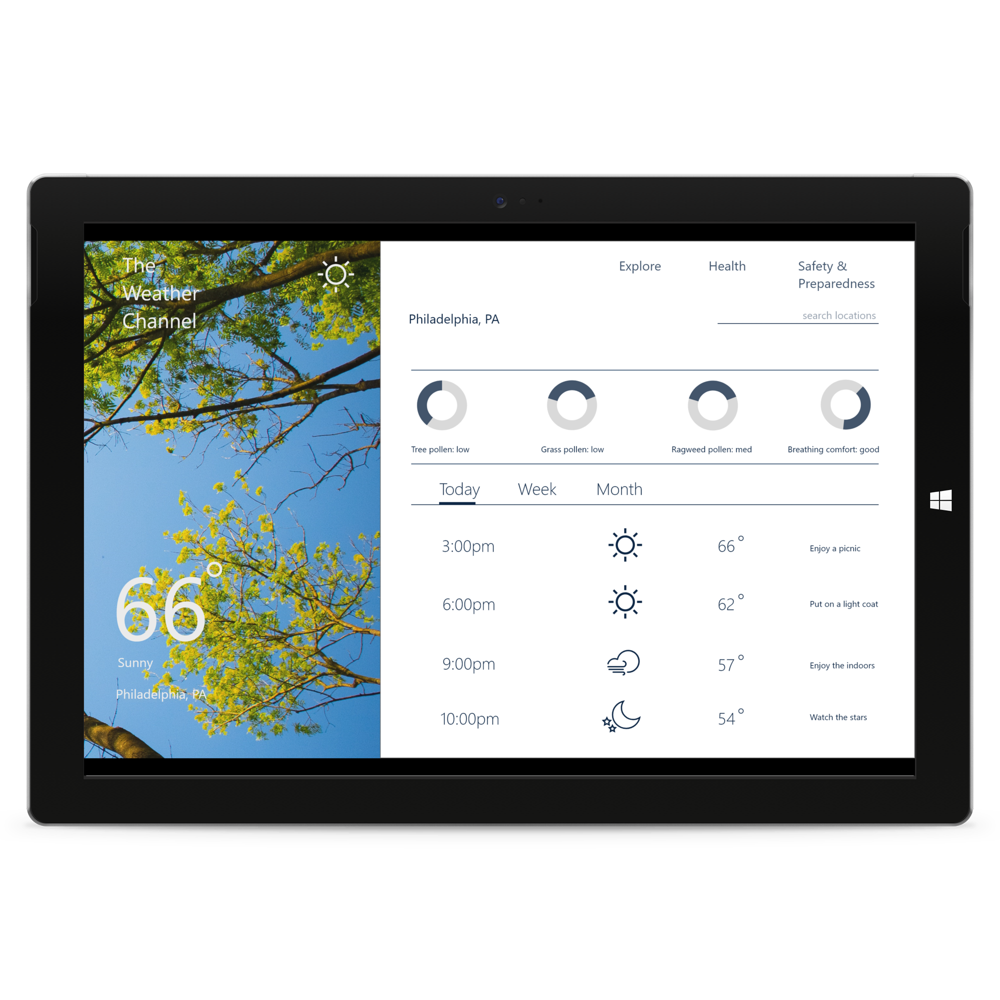
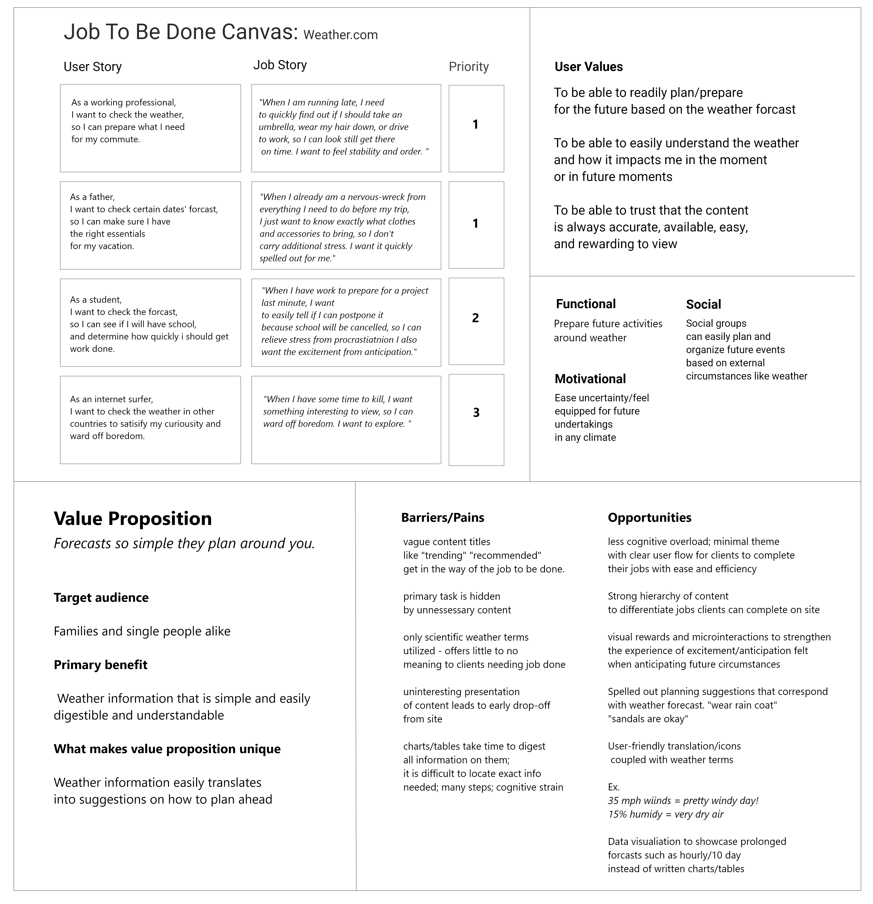
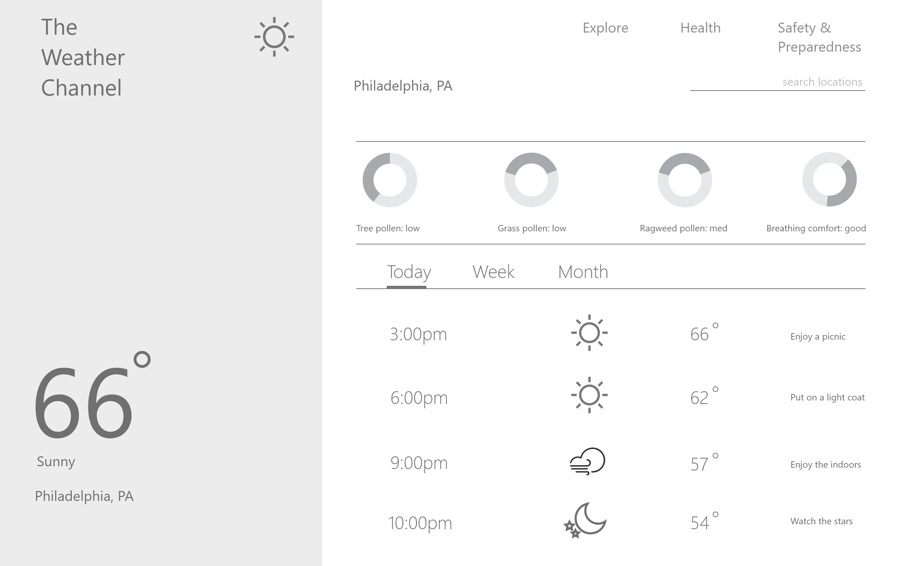

Finding the Job in Weather.com
Rediscovering why we check the weather
Introduction
The Weather Channel Redesign was a corporate makever project I did at Moore College of Art and Design. My role was to choose a site to redesign after doing a heuristic evaluation of the site; conduct user research; create low-fidelity wireframes and a high-fidelity mockup of the desktop redesign.
Discovery
I don't want a website. I want to get a job done.
During the discovery phase I chose to explore an interesting framework I learned from Alan Klement called the Job-To-Be-Done Framework. I used job stories as well as user stories in order to determine why a user would "hire a website." What is interesting about this framework is that it is multi-faceted and considers the emotional, social, and functional jobs we hire products for.
Afterward I formulated a new value proposition for The Weather Channel based on user insights. Lastly I conceptualized opportunities for the redesign.
Ideation
Low-Fidelity Wireframe
Design